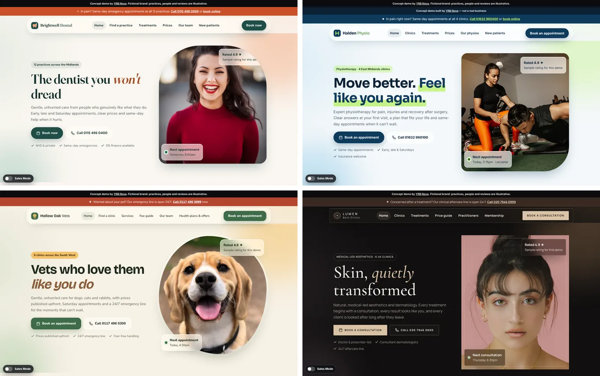
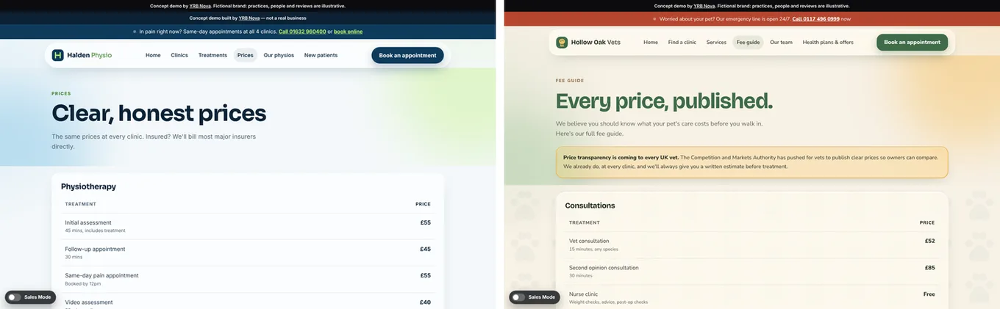

Template vs Custom Website: Honest Pros and Cons (UK)

You've spent Sunday evening on a website builder. You picked a template with a lovely photo of a minimalist coffee shop, swapped in your logo, and somehow it still looks like a minimalist coffee shop. You're a roofer.
So now you're wondering whether to keep going or pay someone. This post gives you the honest version of that decision, including where a template is the right answer and where we'd tell you not to pay us.
What "template" and "custom" actually mean
A template website starts from a design someone made for lots of businesses at once. You usually build it yourself on a hosted builder such as Wix or Squarespace, swapping in your own words and photos, and pay a monthly fee to keep it live.
A custom website is designed around one business. Someone works out what your customers need to see, in what order, and builds the pages for that. You usually pay once for the build, then for hosting.
There's also a middle ground that nobody talks about, and we'll get to it, because we use it ourselves.
Where a template wins
Templates get a bad name, but they're genuinely good at some things.
- Cost on day one. Our website cost guide puts DIY builders at roughly £10 to £30 a month in the UK. That's hard to beat if cash is tight right now.
- Speed. If you have your words and photos ready, you can have something live this weekend.
- You can change it yourself. New price? Holiday closure? You log in and do it at 10pm without emailing anyone.
- Built-in extras. Most builders offer add-ons for shops, forms and bookings, so you're not starting from nothing.
If you're testing a side business, or you just need a page that says who you are and how to call you, a template is a perfectly sensible place to start. Plenty of businesses never need more.
Where a template costs you
The catch isn't the template. It's everything around it.
- The fee never stops. £20 a month is £240 a year, every year the site is live, plus any paid add-ons. Work out your own number over three years before you decide it's the cheap option.
- Your time isn't free. Every evening spent dragging boxes around is an evening you're not quoting, invoicing or asleep.
- It was designed for someone else. A template built for a café puts the menu first. A plumber needs the phone number and the areas covered first. You can bend a template, but you'll be fighting it.
- You look like other people. Popular templates are popular. Your customer may have seen the same layout on three other sites that week.
- Leaving can mean starting again. On most hosted builders the design lives on their platform. If you move, you usually rebuild rather than take it with you. Check this before you commit.
None of these make a template bad. They just mean "cheap" depends on how long you keep it and what your evenings are worth.
Where a custom build wins
A custom site starts from your customers' questions, not someone else's layout.
The two real client sites we built this year show what that means in practice. They look nothing alike (one is black and chrome, the other is pink and glossy) because the businesses are nothing alike.
Custom also wins when your business has something a template doesn't expect. Styled By KY needed prices broken down by hair length and a four-step booking flow with a card deposit. That's covered in our post on what a hair stylist website needs.
Where custom costs you
Being fair to the other side:
- More money upfront. Ours are fixed at £350, £600 or £800, paid once. That's a bigger cheque than a first month on a builder.
- Changes may need a person. Unless you learn the code, edits go through whoever built it. Our optional hosting and support (£10 a month or £100 a year) includes small content changes on request, but it's still an email rather than a button.
- A bad custom site is worse than a good template. "Custom" only means someone made it. Ask to see sites they've built and check them on your phone.
The middle ground: a template built for your trade
Here's the confession. We use a template too.
Our four healthcare concept sites (a dental practice, a physio clinic, a vet and a skin clinic) all come from one shared kit we built. Each brand is a settings file: its clinics, treatments, prices and team. Run the script and out comes a full site.

That works because clinics have the same jobs to do: show fees, list locations, take bookings. The template was designed for that kind of business, not borrowed from a coffee shop.
So the real question isn't template or custom. It's was this designed for a business like mine? A builder template made for photographers is a poor fit for an electrician. A template made for clinics is a decent start for a clinic.
How to decide, honestly
Go with a template if:
- You're testing an idea and might change direction in six months.
- You need a simple page this week and money is tight.
- You enjoy fiddling with it and have the evenings to spare.
Go custom if:
- Most of your work comes from people finding you on Google or checking you out before they call.
- Your pricing, booking or service area doesn't fit a standard layout.
- You've already lost a weekend to a builder and it still doesn't look like you.
Do this today
Before you pay anyone (us included), spend 20 minutes on this:
- Write down the five questions customers ask you most. Whatever you choose must answer these on the first screen or two.
- Add up three years. Builder monthly fee times 36, plus add-ons, against a one-off build plus hosting.
- Open your current site on your phone. If you need to pinch and zoom, start there.
- Find two competitors' sites. Note what makes you want to call one and close the other.
- Check you own your domain name. It should be registered in your name, whichever route you pick.
If you'd like a second opinion, our free website audit will tell you whether your current site needs replacing or just fixing. Our packages and what's in each are on the services and prices page.
FAQ
Is a template website bad for SEO?
Not automatically. Google cares about clear headings, useful words, fast pages and your location details, and a template can have all of those. Problems start when the layout hides the information people search for.
How much does a custom website cost in the UK?
It varies a lot. Our cost guide puts freelancers and small studios at roughly £300 to £1,500 and agencies at £2,000 or more. Ours are fixed at £350, £600 or £800, paid once.
Can I switch from Wix or Squarespace to a custom website?
Yes. You'll usually rebuild the design rather than move it, but your words, photos and domain name can come with you. Keep the same page addresses where you can, or set up redirects, so Google doesn't lose track of you.
Can I edit a custom website myself?
It depends how it's built. Some custom sites come with an editor, and many don't. Ask before you buy, and if you'd rather not touch it, check who makes changes for you and what that costs.
Not sure which route suits your business?
Send us your current site or your Instagram and we'll tell you honestly whether a builder would do the job. The audit is free and there's no hard sell.